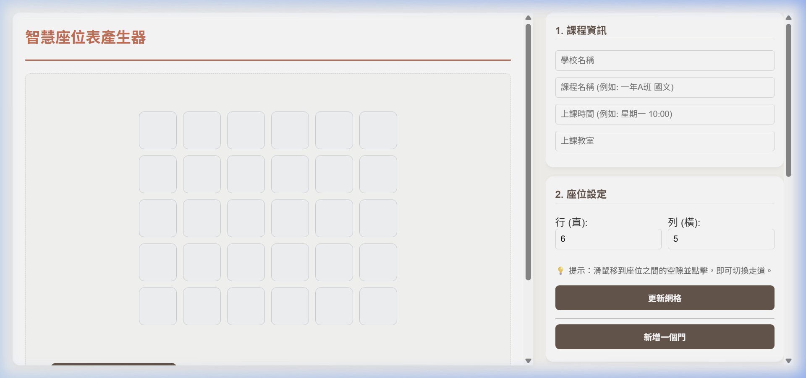
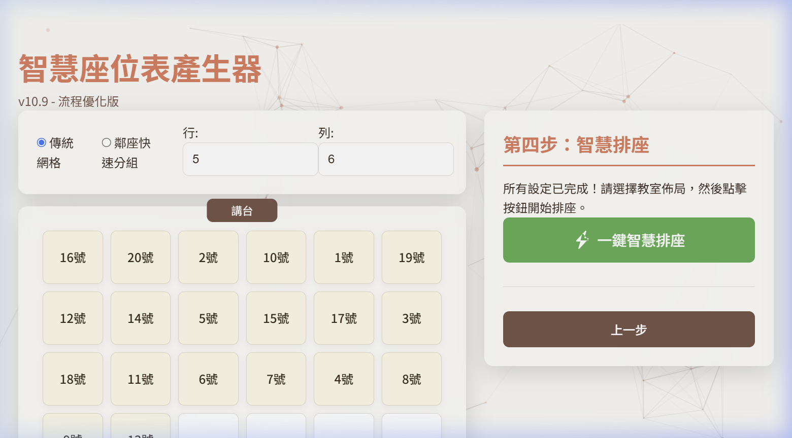
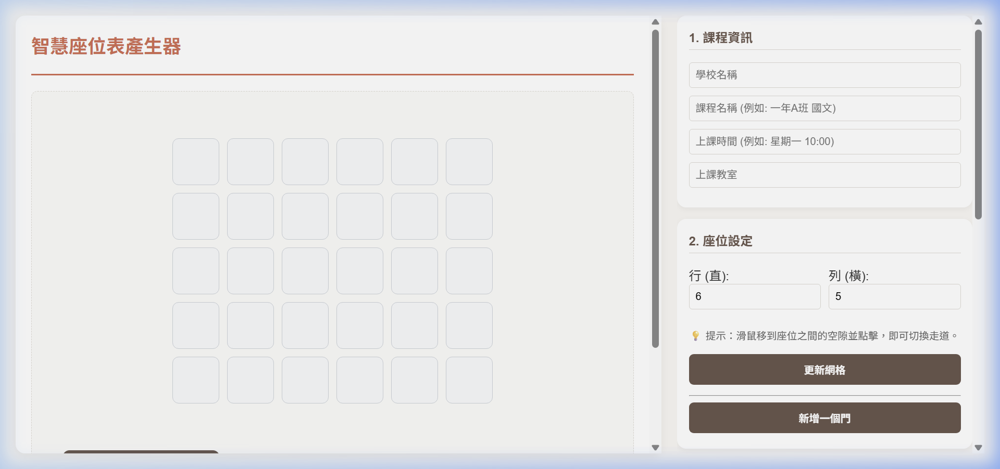

座位表產生器 - 操作圖文說明
歡迎使用「座位表產生器」！這是一個專為老師設計的排座位工具，能夠輕鬆安排班級座位、設定走道，並匯出成圖片或 Excel。

1. 填寫課程資訊與設定網格
一開始，您可以在右側面板設定課程資訊（如學校、課程、時間、教室）。
接著在座位設定區塊，輸入您需要的「行」與「列」數，然後點擊「更新網格」。
2. 匯入名單與自動排座
您可以將學生名單貼入文字方塊中（每行一個名字），然後點擊「產生學生名單」。
- 您可以用滑鼠（或在平板上用手指）將學生拖曳到任何座位上。
- 或者點擊「自動分配座位 (S型)」來一鍵填滿座位。
- 也可以點擊「相鄰分組模式」來自動把相鄰的座位兩兩一組！

3. 設定走道
這是一個非常強大的功能！
當您將滑鼠（或手指）移到座位與座位之間的空隙時，會出現藍色的提示條。
- 點擊藍色提示條，就會在該處產生一條寬敞的走道！
- 再次點擊，就可以取消走道。

4. 加入「門」
如果您需要標示教室門的位置，點擊「新增一個門」。
- 您可以自由將門拖曳到教室的四個邊界上。
- 連續點擊兩下門即可刪除它。
5. 匯出座位表
排好座位後，您可以點擊左下角的按鈕將座位表存檔：
- 下載圖片：將目前的座位表儲存為 PNG 圖片。
- 下載 Excel：將座位表匯出為 Excel 檔案，方便後續列印或編輯。
💡 小技巧： 如果您排到一半需要暫停，可以點擊「儲存草稿」，下次進來時只要點擊「讀取草稿」就能繼續編輯！